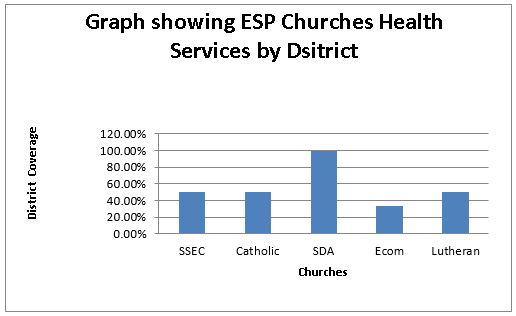
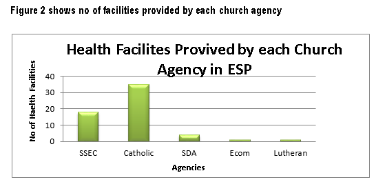
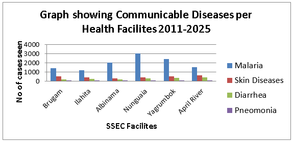

The first medical clinic was established at Misim by two missionary women Jean Arey (Kitchaman) and Violet Sullivan who were both nurses and Bible teachers. They modelled caring for the sick, injuredmothers and babies. Then Ilahita became the bigger medical clinic due to the dense population and other areas as Brugam. Nungwaia, Yakrumbok and Niksek were also established thereafter under the Mission Administration. Albinama and all other Aid Post came a little later. There are 18 health facilities in SSEC catchment areas in Momase Region and the church is determined to continue to establish such services in other three regions of Papua New Guinea as well.
There has been a great progress done in this sector in management, administration and community service delivery through the Healthy Island program. The clinical rate for in and out patient’s treatment for common disease has seen a decline in communities where healthy island program is implemented. The Village health volunteer program has trained 250 personals so far and is deployed into the communities of East Sepik and Sandaun Provinces providing basic health care and treatment to the people on volunteering service.
The church through Health services is embarking on implementing and maintaining the National Health policy and programs to improve on the health and encourage healthy lifestyle living by the people.
SSEC provided Health services in three districts ( Maprik, Ambunti/Dreikikir, Wosera/Gawi) of East Sepik province as other provinces are yet to establish such services. Figure 1 illustrated Health services provided by this church compared to other churches by district in East Sepik province. Figure 2 clearly indicated that SSEC is the second largest health service provider in the East Sepik Province.
However, in terms of infrastructures, Information Communication Technology more attention should be given, as lots of current existing staff houses and ward buildings are in deteriorating state. We need to increase our capacity of keeping proper data of information as this become critical to improve on for proper analysing and interpretation of information.
There is evidence in our Health records that identifies the major health problems, and increasing evidence on the factors that contribute to these concerns. Infectious disease and maternal and child health concerns account for the greatest burden of disease in the community, and typically the greatest burden on the health services as shown on figure 3



Improve health of our people to be healthy individuals, families and communities living in a clean safe environment free from oppression and illness.